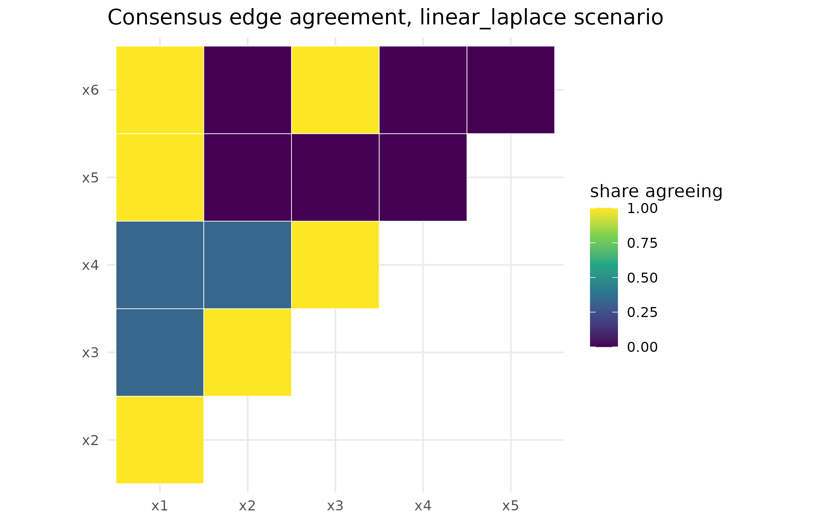
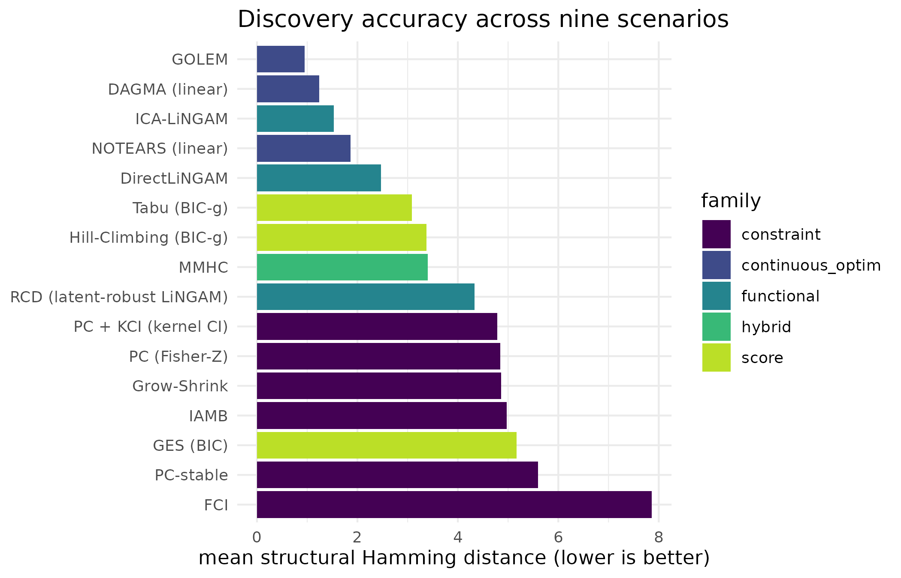
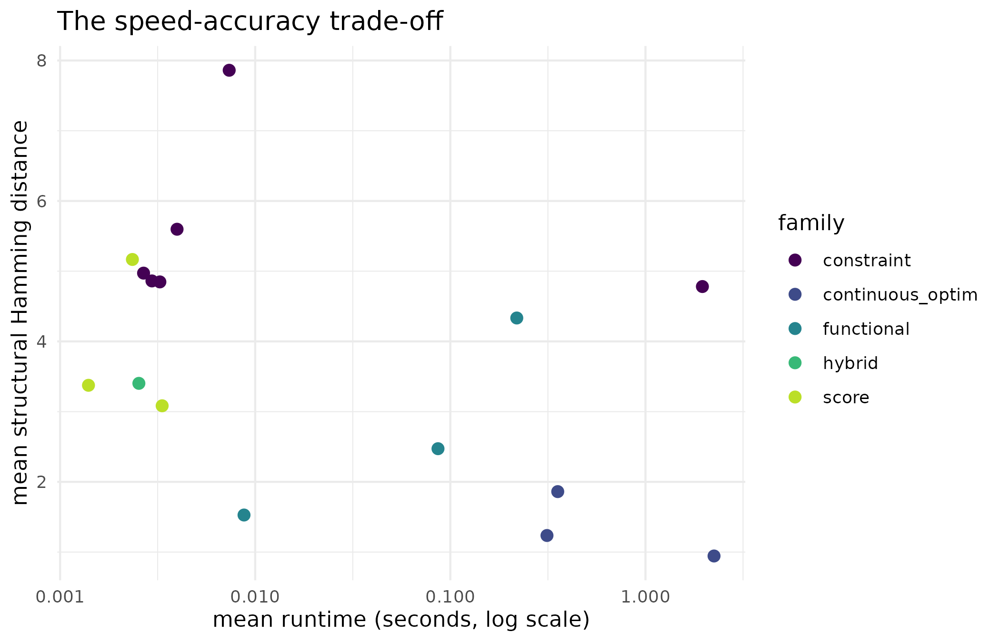

library(cdzoo)
has_pcalg <- requireNamespace("pcalg", quietly = TRUE)
has_ggplot2 <- requireNamespace("ggplot2", quietly = TRUE)
has_proxymix <- requireNamespace("proxymix", quietly = TRUE)
set.seed(20260902)Why
An analyst sitting on a data set of several observational variables,
who needs a defensible adjustment set for one variable’s effect on
another, asks a blunt question: I do not trust running one
causal-discovery algorithm and taking its graph as the answer – which
method should I run on data that looks like mine, how sure should I be,
and what would the alternatives have said? cdzoo is
built to answer exactly that, for a problem with no run-time ground
truth to check any single algorithm’s answer against: it reads the
data’s own signature, routes to the method a controlled benchmark shows
is suited to that signature, runs it, and hands back the graph together
with its reasoning, a confidence label, and the alternatives it did not
choose – or, when even that is not certainty enough, the
stability-weighted agreement of several methods run side by side.
What
list_methods() lists every registered discovery method,
whether it needs an R package (pcalg, bnlearn)
or a Python module reached through reticulate, and whether
that back-end is installed on this machine. cd_discover()
runs one named method directly on a data matrix and returns a
cd_result: the recovered graph as an adjacency matrix in
the pcalg amat.cpdag convention, where
graph[i, j] == 1 and graph[j, i] == 0 encodes
a directed edge from i to j, and
graph[i, j] == graph[j, i] == 1 encodes an edge whose
direction was not resolved. cd_edges() turns that matrix
into a tidy edge list.
Because discovery has no run-time ground truth,
cd_diagnose() first describes the data’s own
characteristics – its non-Gaussianity, a curvature heuristic for
nonlinear mechanisms, the condition number of its correlation matrix,
the spread of its per-node residual variances – and
cd_auto() routes on those characteristics to the method the
benchmark evidence (cd_field_benchmark) shows is suited to
that regime, runs it, and reports why in its rationale, how
sure in its confidence, and what it did not choose in its
alternatives. cd_explain() prints the fuller,
auditable account. mode = "consensus" runs several
benchmark-suited methods at once and returns their stability-weighted
union, with the share of methods that agreed on each edge.
cd_score() checks a recovered graph against a known truth
on the built-in scenario grid (cd_scenario()), and
cd_benchmark() runs that grid for a chosen set of methods
and scenarios.
Do
The registry
reg <- list_methods()| id | name | family | language | installed | |
|---|---|---|---|---|---|
| dagma_linear_py | dagma_linear_py | DAGMA (linear) | continuous_optim | Python | FALSE |
| directlingam_py | directlingam_py | DirectLiNGAM | functional | Python | FALSE |
| fci_pcalg | fci_pcalg | FCI | constraint | R | TRUE |
| fci_suffstat | fci_suffstat | FCI from sufficient statistic | constraint | R | TRUE |
| ges_pcalg | ges_pcalg | GES (BIC) | score | R | TRUE |
| ggm_suffstat | ggm_suffstat | Gaussian graphical model (partial correlation) | constraint | R | TRUE |
| golem_gcastle | golem_gcastle | GOLEM | continuous_optim | Python | FALSE |
| gs_bnlearn | gs_bnlearn | Grow-Shrink | constraint | R | TRUE |
| hc_bnlearn | hc_bnlearn | Hill-Climbing (BIC-g) | score | R | TRUE |
| iamb_bnlearn | iamb_bnlearn | IAMB | constraint | R | TRUE |
| icalingam_pcalg | icalingam_pcalg | ICA-LiNGAM | functional | R | TRUE |
| mmhc_bnlearn | mmhc_bnlearn | MMHC | hybrid | R | TRUE |
| notears_gcastle | notears_gcastle | NOTEARS (linear) | continuous_optim | Python | FALSE |
| pc_kci_cl | pc_kci_cl | PC + KCI (kernel CI) | constraint | Python | FALSE |
| pc_pcalg | pc_pcalg | PC (Fisher-Z) | constraint | R | TRUE |
| pc_suffstat | pc_suffstat | PC from sufficient statistic | constraint | R | TRUE |
| pc.stable_bnlearn | pc.stable_bnlearn | PC-stable | constraint | R | TRUE |
| rcd_py | rcd_py | RCD (latent-robust LiNGAM) | functional | Python | FALSE |
| tabu_bnlearn | tabu_bnlearn | Tabu (BIC-g) | score | R | TRUE |
Of the 19 registered methods, 13 have an installed back-end here.
Nothing below needs every row of this table to be TRUE: a
method whose back-end is missing is simply not a candidate the
recommender can pick, and it says so when that changes its answer.
Running one method directly
sim <- cd_scenario("linear_gaussian", seed = 1L)
res <- cd_discover(sim$data, "pc_pcalg")
res
#> <cd_result>: PC (Fisher-Z) [constraint, R]
#> status : ok
#> variables : 6 (x1, x2, x3, x4, x5, x6)
#> edges : 7 directed, 0 undirected
#> runtime : 0.044s
head(cd_edges(res))
#> from to type
#> 1 x1 x2 -->
#> 2 x5 x1 -->
#> 3 x1 x6 -->
#> 4 x2 x3 -->
#> 5 x4 x2 -->
#> 6 x4 x3 -->cd_discover() is the plain dispatcher: name a method,
get its graph, with no routing and no opinion attached. It is what
cd_auto() calls once it has decided which method that
should be.
The recommender explains itself
A nonlinear additive-noise chain (nonlinear_anm) is the
regime the registry’s kernel conditional-independence method was built
for. cd_diagnose() shows what the recommender reads before
it decides anything:
nl <- cd_scenario("nonlinear_anm", seed = 1L)
knitr::kable(
cd_diagnose(nl$data),
caption = "The transparent characteristics cd_auto() reads for this data."
)| n | p | non_gaussian_fraction | mean_abs_kurtosis | equal_variance_ratio | nonlinearity | condition_number |
|---|---|---|---|---|---|---|
| 500 | 6 | 1 | 16.227 | 4.615 | 0.109 | 17.1 |
Asking for the recommendation alone, with no method actually run, costs nothing and needs no back-end at all:
rec_only <- cd_auto(nl$data, report = FALSE)
cd_explain(rec_only)
#> Recommendation: GES (BIC)
#> family : score (R)
#> status : recommendation only (report = FALSE)
#>
#> Why this method:
#> a curvature heuristic flags a possible nonlinear mechanism (quadratic
#> R-squared gain 0.11); a kernel conditional-independence test (PC+KCI) is
#> suited to nonlinear dependence. The preferred method (PC + KCI (kernel
#> CI)) is not installed; using GES (BIC); confidence downgraded from
#> moderate to low because it is not the route's preferred method
#>
#> Confidence: low
#>
#> Alternatives considered (preference order):
#> PC + KCI (kernel CI), GES (BIC), PC (Fisher-Z), MMHC
#>
#> Routing thresholds:
#> nonlinearity 0.05
#> non_gaussian_fraction 0.5
#> condition_number 1000
#> equal_variance_ratio 2Running the recommendation produces the graph on top of the same rationale and confidence:
rec <- cd_auto(nl$data)
res_nl <- cd_edges(rec)
res_nl
#> from to type
#> 1 x1 x2 -->
#> 2 x3 x2 -->
#> 3 x4 x2 -->
#> 4 x3 x4 ---
#> 5 x4 x5 ---
#> 6 x4 x6 ---
#> 7 x5 x6 ---GES (BIC) is not the route’s first choice; the rationale above says which method was preferred and why it was not used. This is the package’s identity in one call: it never decrees a method, it names the one it ran, the evidence that pointed at it, how confident that evidence leaves it, and the alternatives a differently-equipped machine would have reached for instead.
When unsure, ask several: consensus
lap <- cd_scenario("linear_laplace", seed = 1L)
con <- cd_auto(lap$data, mode = "consensus", top_k = 3L)
con
#> <cd_result>: Consensus of 3 methods [?, R]
#> status : ok
#> variables : 6 (x1, x2, x3, x4, x5, x6)
#> edges : 3 directed, 3 undirected
#> routed : 100% of variables depart from normality (mean |excess kurtosis| 1.41); the LiNGAM family exploits non-Gaussianity for orientation and is fast; consensus of ICA-LiNGAM, FCI, GES (BIC)
#> confidence: high
edges_con <- cd_edges(con, agreement = TRUE)| from | to | type | agreement |
|---|---|---|---|
| x1 | x2 | undirected | 1 |
| x1 | x5 | undirected | 1 |
| x1 | x6 | directed | 1 |
| x2 | x3 | directed | 1 |
| x3 | x4 | undirected | 1 |
| x3 | x6 | directed | 1 |
The full pairwise picture – including the variable pairs no method proposed an edge for – is a heat map, which a table of found edges alone cannot show:
agr <- con@provenance$agreement
idx <- which(upper.tri(agr), arr.ind = TRUE)
heat_df <- data.frame(
from = rownames(agr)[idx[, 1L]],
to = colnames(agr)[idx[, 2L]],
agreement = agr[idx],
stringsAsFactors = FALSE
)
ggplot2::ggplot(
heat_df, ggplot2::aes(x = from, y = to, fill = agreement)
) +
ggplot2::geom_tile(colour = "white") +
ggplot2::scale_fill_viridis_c(
name = "share agreeing", limits = c(0, 1), option = "D"
) +
ggplot2::labs(
x = NULL, y = NULL,
title = "Consensus edge agreement, linear_laplace scenario"
) +
ggplot2::theme_minimal(base_size = 11) +
ggplot2::coord_fixed()
Pairwise edge agreement among the consensus-mode methods: the share of the combined methods that recovered an edge (in either direction) between each pair of variables, ignoring orientation. Darker tiles mark pairs every method agreed carry an edge.
Of the 6 edges that cleared the consensus’s majority-agreement threshold out of the 3 combined methods, 6 were found by every one of the 3 methods and 0 by a bare majority alone; the heat map’s palest tiles are the pairs no majority agreed on at all, which the edge table above does not show because it only lists edges the consensus actually carried.
The benchmark evidence behind the routing
cd_field_benchmark is shipped with the package, so this
section needs no back-end. It is a summary of 16 established methods run
across the 9 structural-causal-model scenarios of
cd_scenarios(), each scored against its known DAG and
averaged over random-graph seeds – the evidence cd_auto()
routes on.
agg <- aggregate(
cbind(shd, skeleton_f1, runtime_s) ~ method_name + family,
data = cd_field_benchmark, FUN = mean
)
agg <- agg[order(agg$shd), ]| method_name | family | shd | skeleton_f1 | runtime_s |
|---|---|---|---|---|
| GOLEM | continuous_optim | 0.944 | 0.901 | 2.246 |
| DAGMA (linear) | continuous_optim | 1.236 | 0.890 | 0.313 |
| ICA-LiNGAM | functional | 1.528 | 0.902 | 0.009 |
| NOTEARS (linear) | continuous_optim | 1.861 | 0.858 | 0.355 |
| DirectLiNGAM | functional | 2.472 | 0.884 | 0.086 |
| Tabu (BIC-g) | score | 3.083 | 0.866 | 0.003 |
| Hill-Climbing (BIC-g) | score | 3.375 | 0.853 | 0.001 |
| MMHC | hybrid | 3.403 | 0.810 | 0.003 |
| RCD (latent-robust LiNGAM) | functional | 4.333 | 0.491 | 0.219 |
| PC + KCI (kernel CI) | constraint | 4.781 | 0.839 | 1.958 |
| PC (Fisher-Z) | constraint | 4.847 | 0.797 | 0.003 |
| Grow-Shrink | constraint | 4.861 | 0.823 | 0.003 |
| IAMB | constraint | 4.972 | 0.819 | 0.003 |
| GES (BIC) | score | 5.167 | 0.841 | 0.002 |
| PC-stable | constraint | 5.597 | 0.797 | 0.004 |
| FCI | constraint | 7.861 | 0.782 | 0.007 |
ord <- agg[order(-agg$shd), "method_name"]
plot_df <- agg
plot_df$method_name <- factor(plot_df$method_name, levels = ord)
ggplot2::ggplot(plot_df, ggplot2::aes(method_name, shd, fill = family)) +
ggplot2::geom_col() +
ggplot2::coord_flip() +
ggplot2::scale_fill_viridis_d(option = "D", end = 0.9) +
ggplot2::labs(
x = NULL, y = "mean structural Hamming distance (lower is better)",
fill = "family", title = "Discovery accuracy across nine scenarios"
) +
ggplot2::theme_minimal(base_size = 11)
Mean structural Hamming distance (lower is better) for each registered method, averaged over the nine scenarios and coloured by algorithm family.
ggplot2::ggplot(
agg, ggplot2::aes(runtime_s, shd, colour = family, label = method_name)
) +
ggplot2::geom_point(size = 2.4) +
ggplot2::scale_x_log10() +
ggplot2::scale_colour_viridis_d(option = "D", end = 0.9) +
ggplot2::labs(
x = "mean runtime (seconds, log scale)",
y = "mean structural Hamming distance", colour = "family",
title = "The speed-accuracy trade-off"
) +
ggplot2::theme_minimal(base_size = 11)
The speed-accuracy trade-off: mean runtime (log scale) against mean structural Hamming distance for each method, coloured by algorithm family.
The continuous-optimisation and LiNGAM families cluster at the low-error end of the accuracy figure; the kernel- and constraint-based search methods sit at the high-error end on these mostly-linear scenarios, which is why the recommender does not route to them by default outside a nonlinear-mechanism signature. The kernel conditional-independence method runs roughly 223 times slower than the fastest LiNGAM entrant while landing at a worse mean structural Hamming distance, which is why the route above confined it to the nonlinear signature rather than using it as a general-purpose default.
Scoring and benchmarking your own runs
sim_b <- cd_scenario("linear_bimodal", seed = 2L)
score_one <- cd_score(cd_discover(sim_b$data, "icalingam_pcalg"), sim_b$truth)| skeleton_f1 | skeleton_precision | skeleton_recall | shd | orient_recall |
|---|---|---|---|---|
| 1 | 1 | 1 | 0 | 1 |
cd_benchmark() runs a grid of methods over a grid of
scenarios and seeds, isolating each cell so one back-end’s failure
records a status rather than stopping the sweep:
bench <- cd_benchmark(
methods = c("pc_pcalg", "ges_pcalg"),
scenarios = c("linear_gaussian", "linear_bimodal"),
seeds = 1:2, verbose = FALSE
)| scenario | family | method | method_family | language | seed | status | skeleton_f1 | shd | orient_recall | runtime_s |
|---|---|---|---|---|---|---|---|---|---|---|
| linear_gaussian | linear-Gaussian | pc_pcalg | constraint | R | 1 | ok | 1.000 | 3 | 0.571 | 0.010 |
| linear_gaussian | linear-Gaussian | ges_pcalg | score | R | 1 | ok | 1.000 | 5 | 0.286 | 0.008 |
| linear_gaussian | linear-Gaussian | pc_pcalg | constraint | R | 2 | ok | 1.000 | 0 | 1.000 | 0.007 |
| linear_gaussian | linear-Gaussian | ges_pcalg | score | R | 2 | ok | 1.000 | 0 | 1.000 | 0.007 |
| linear_bimodal | linear-multimodal | pc_pcalg | constraint | R | 1 | ok | 1.000 | 3 | 0.571 | 0.011 |
| linear_bimodal | linear-multimodal | ges_pcalg | score | R | 1 | ok | 1.000 | 5 | 0.286 | 0.007 |
| linear_bimodal | linear-multimodal | pc_pcalg | constraint | R | 2 | ok | 0.889 | 1 | 1.000 | 0.008 |
| linear_bimodal | linear-multimodal | ges_pcalg | score | R | 2 | ok | 1.000 | 0 | 1.000 | 0.007 |
Beyond a sample: an evaluable density
The sampling-based methods need a sample. When a density can be
evaluated but not sampled – given as a mixture rather than draws – the
conditional-independence (Markov) structure can be read off it in closed
form instead. Passing a proxymix mixture to
cd_auto() takes this route, which no sampling-based method
in the registry can serve:
# a three-variable mixture whose precision makes x1 and x3 conditionally
# independent given x2 -- a chain x1 -- x2 -- x3
sigma_g <- solve(matrix(
c(1, -0.5, 0, -0.5, 1.25, -0.5, 0, -0.5, 1), 3L, 3L
))
g <- proxymix::gmm(
weights = 1, means = list(c(0, 0, 0)), covariances = list(sigma_g)
)
res_density <- cd_auto(g)
res_density@rationale
#> [1] "the input is an evaluable density, not a sample; the conditional-independence (Markov) structure is read off the mixture in closed form"
cd_edges(res_density)
#> from to type
#> 1 x1 x2 ---
#> 2 x2 x3 ---Read
GES (BIC) answers the opening question in miniature. On the nonlinear
scenario, cd_auto() did not decree an answer: its rationale
named the method the benchmark prefers once a curvature heuristic clears
0.05, said plainly that method is not installed here, named the
substitute it ran instead, and downgraded its own confidence from
moderate to low because the substitute is not the route’s
preferred method, exactly as the rationale states. An analyst reading
only the confidence label, without the rationale attached to it, would
not know whether low means the data itself is ambiguous or
the right tool for it simply was not on the machine;
cd_auto() never lets that distinction go unstated.
Consensus mode answers the same trust question a second way: instead of one run’s self-reported confidence, it shows how much several benchmark-suited methods agree once they are actually run side by side. The heat map above carries information the edge table cannot – every pair the combined methods considered and rejected, not only the ones they proposed an edge for – which is exactly the fuller picture an analyst who does not trust a single algorithm’s graph is asking for.
The benchmark figures ground the routing itself: the
continuous-optimisation and LiNGAM families cluster at the accurate,
cheap end of the trade-off, and the kernel conditional-independence
method is markedly slower and less accurate on these mostly-linear
scenarios, which is exactly why cd_auto() reserves it for a
signature that specifically flags nonlinearity rather than using it as a
default.
Limits
This vignette never checks a recommendation against a ground truth
outside the built-in scenario grid. On genuinely unlabelled data,
cd_score() has nothing to score against, and a confidence
label describes how well the data’s signature matches a regime the
benchmark was run on, not a promise about this particular data set.
Consensus mode’s agreement is stability across methods run on the same
data, not independent corroboration from a second data source: methods
that share an assumption can agree confidently and still be wrong
together. cd_field_benchmark’s nine scenarios are simulated
and, however varied their noise families and graph shapes, cannot cover
every mechanism a real data set might hide. This build has no Python
discovery back-end installed, so every route that would have preferred
DirectLiNGAM, RCD, NOTEARS, GOLEM, DAGMA or PC+KCI ran its next-best R
alternative instead and said so in its rationale, exactly as shown
above; a build with those Python modules installed through
reticulate would run each route’s first choice and report
higher confidence on the regimes those methods target. Installing a
different set of back-ends, adding scenarios covering mechanisms outside
this grid, or asking for a different top_k in consensus
mode would each change which method is preferred, which is substituted,
and which edges the consensus carries.
What to read next
Discovery from sufficient statistics covers the case this vignette does not: no row-level data at all, only an aggregated correlation matrix or pairwise co-occurrence counts, and what the recommender can and cannot say about a data set it can only see through its second moments.
Reproduce
set.seed(20260902) guards the top-level session; every
simulated data set in this vignette is additionally seeded explicitly
through cd_scenario()’s own seed argument
(1L or 2L as shown in each call), so the same
call reproduces the same data regardless of what ran before it in the
session.
sessionInfo()
#> R version 4.6.1 (2026-06-24)
#> Platform: x86_64-pc-linux-gnu
#> Running under: Ubuntu 24.04.5 LTS
#>
#> Matrix products: default
#> BLAS: /usr/lib/x86_64-linux-gnu/openblas-pthread/libblas.so.3
#> LAPACK: /usr/lib/x86_64-linux-gnu/openblas-pthread/libopenblasp-r0.3.26.so; LAPACK version 3.12.0
#>
#> locale:
#> [1] LC_CTYPE=C.UTF-8 LC_NUMERIC=C LC_TIME=C.UTF-8
#> [4] LC_COLLATE=C.UTF-8 LC_MONETARY=C.UTF-8 LC_MESSAGES=C.UTF-8
#> [7] LC_PAPER=C.UTF-8 LC_NAME=C LC_ADDRESS=C
#> [10] LC_TELEPHONE=C LC_MEASUREMENT=C.UTF-8 LC_IDENTIFICATION=C
#>
#> time zone: UTC
#> tzcode source: system (glibc)
#>
#> attached base packages:
#> [1] stats graphics grDevices utils datasets methods base
#>
#> other attached packages:
#> [1] cdzoo_0.2.0.9000
#>
#> loaded via a namespace (and not attached):
#> [1] sass_0.4.10 generics_0.1.4 robustbase_0.99-7
#> [4] lattice_0.22-9 digest_0.6.39 magrittr_2.0.5
#> [7] evaluate_1.0.5 grid_4.6.1 RColorBrewer_1.1-3
#> [10] fastmap_1.2.0 Matrix_1.7-5 sfsmisc_1.1-26
#> [13] jsonlite_2.0.0 graph_1.90.0 pcalg_2.7-12
#> [16] BiocManager_1.30.27 viridisLite_0.4.3 scales_1.4.0
#> [19] textshaping_1.0.5 jquerylib_0.1.4 abind_1.4-8
#> [22] cli_3.6.6 rlang_1.3.0 bnlearn_5.2.1
#> [25] ggm_2.5.4 fastICA_1.2-8 withr_3.0.3
#> [28] cachem_1.1.0 yaml_2.3.12 otel_0.2.0
#> [31] parallel_4.6.1 tools_4.6.1 bdsmatrix_1.3-7
#> [34] corpcor_1.6.10 ggplot2_4.0.3 BiocGenerics_0.58.1
#> [37] reticulate_1.47.0 png_0.1-9 vctrs_0.7.3
#> [40] R6_2.6.1 stats4_4.6.1 lifecycle_1.0.5
#> [43] fs_2.1.0 RBGL_1.88.0 clue_0.3-68
#> [46] ragg_1.5.2 cluster_2.1.8.2 pkgconfig_2.0.3
#> [49] desc_1.4.3 pkgdown_2.2.1 bslib_0.12.0
#> [52] gtable_0.3.6 proxymix_0.17.0 glue_1.8.1
#> [55] Rcpp_1.1.2 systemfonts_1.3.2 DEoptimR_1.2-2
#> [58] xfun_0.62 knitr_1.52 farver_2.1.2
#> [61] htmltools_0.5.9 igraph_2.3.4 labeling_0.4.3
#> [64] rmarkdown_2.32 compiler_4.6.1 S7_0.2.2